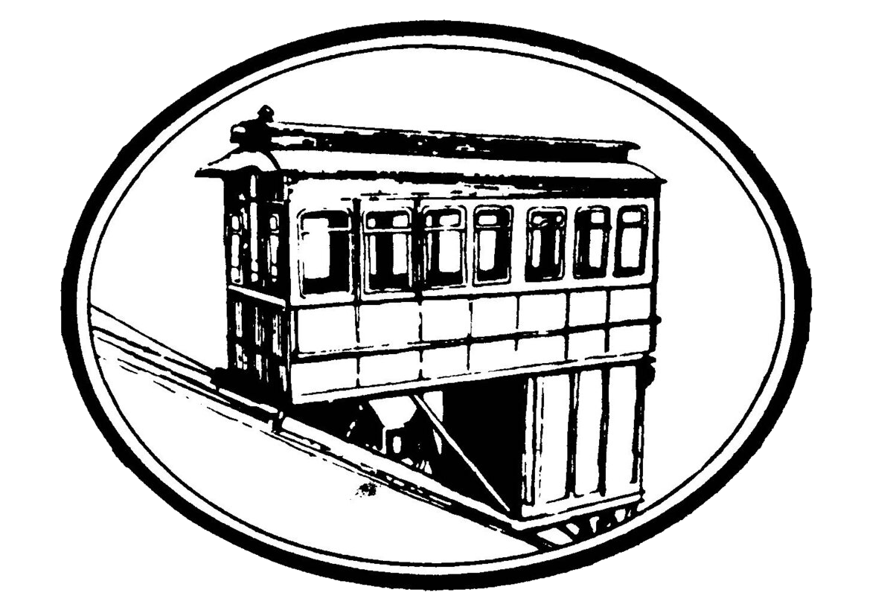

About
Take a step back in time on a century-old cable car and see the best views of downtown Pittsburgh while riding one of the few remaining inclines in the country. Opened on May 20, 1877, the Duquesne Incline was rescued and restored by a group of local residents in 1963 and still delights residents and visitors with its original, elegant, wooden cable cars.
Now you can visit the interior of the incline and watch the machinery while it operates. The Duquesne Incline's upper station houses a museum of Pittsburgh history, including photos and a storehouse of information on inclines from around the world. Unusual Pittsburgh souvenirs, maps and photos can be found at the gift shop.
View from the Incline
Check out Dave DiCello's Photo Gallery for the full collection of views.
Related Video
Video courtesy of Visit Pittsburgh
Fares and Rates
Individual Rates
- Adults (Ages 12-64) $2.50 Each Way or $5.00 Round Trip
- Children (Ages 6-11) $1.25 Each Way or $2.50 Round Trip
- Children (Age 5 and Under) FREE
- PA Seniors 65 and older with a Port Authority Senior Citizen ID (no exceptions) FREE
- University Students from the University of Pittsburgh, Carnegie Mellon University, and Chatham University Students FREE, with proper I.D.
Group Rates (Valid for Any Group of Ten or More People)
- Adults (Ages 12-64) $1.75 Each Way or $3.50 Round Trip
- Children (Ages 6-11) $1.00 Each Way or $1.75 Round Trip
Payment Methods
- Cash fares as well as Port Authority bus passes and tickets are accepted as payment. Bus transfers can be purchased at the Incline.